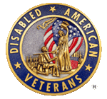

Welcome
to the website of the
DAV, State of Mississippi


The DAV Transportation Network is the only way many veterans are able get to Department of Veterans Affairs (VA) medical facilities for needed treatment. They're men and women who answered our country's call in times of war. Many lost limbs, sight, hearing, or good health. And many live a great distance from a VA hospital.
With fixed incomes, the cost of transportation to a VA hospital is just too high. They're left with two choices. They could go without the treatment they need, or skimp on food or other necessities to pay for transportation. Veterans disabled in our nation's service should never face such dire options. So DAV and Auxiliary volunteers respond, driving vets to and from VA hospitals and clinics. Other grateful Americans are helping too.
The network is administered by DAV Hospital Service Coordinators (HSCs) at the VA's 172 medical centers. The DAV has also donated vans, where needed, to make the program work. All DAV van drivers are volunteers and do not receive payment for the services they provide.
Across the nation, more than 196 HSCs operate more than 180 active programs at VA hospitals and outpatient clinics. These HSCs have recruited a corps of nearly 5,000 volunteer drivers whom they coordinate to provide transportation for veterans needing this service. Additionally DAV Departments and Chapters purchase and donate most of the vans to the VA medical facilities for use in the Transportation Network. DAV HSCs also help veterans file claims for VA benefits, and refer veterans to DAV National Service Officers for professional benefits assistance.
All DAV van drivers are volunteers and do not receive payment for the services they provide.
FOR INFORMATION ON THE DAV, DEPARTMENT OF MISSISSIPPI VAN TRANSPORTATION ROUTES OR IF YOU ARE INTERESTED IN BECOMING A VOLUNTEER DRIVER, PLEASE CALL DEPT. HEADQUARTERS AT XXX-XXX-XXXX.